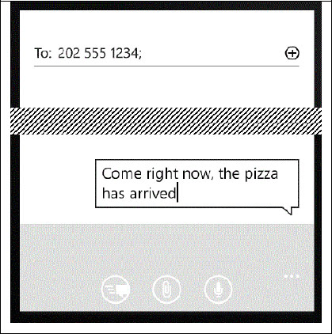

Smart phones, tablets and computers provide calendars, e-mail, access to social media, some forms of instant messaging, SMS and phone calls. Even a computer might place a phone call through the use of a service like Skype. These are all forms of interaction which are covered in this chapter.
8.1 Social messages
Several websites, including Twitter and Facebook in particular, provide the ability to post messages for other people to read. These messages may have associated content, such as a picture or an audio clip. The TouchDevelop API provides facilities for downloading such messages and for posting new messages.
The social resource provides the two methods listed in Table 8-1 for creating a new message and for retrieving messages from a website. A simple example of obtaining messages from the two supported social networks and displaying them might be as follows.
var
TD msgs := social → search(“twitter”, “#touchdevelop”)
var
more msgs := social → search(“facebook”, “TouchDevelop”)
// combine the two collections into one
TD msgs → add many(more msgs)
// reorder and display the messages
TD msgs → sort by date
TD msgs → post to wall
Table 8-1
Messaging methods of the social service
Methods | Description |
|---|---|
social→create message(
message : String) : Message
| Creates a new message with the text body provided. |
social→search(network : String, terms : String) : Message Collection
| Searches twitter or Facebook for recent messages matching the search terms provided. |
8.1.1 Working with messages
A Message value will usually have a text component, because that is the simplest form of message. However additional information is usually associated with that message. The TouchDevelop API supports many methods for accessing or setting extra content attached to a message. These are all methods of the Message datatype. The methods for accessing, or getting, content are listed in the first table of section C.25 in Appendix C, those for setting content in the second table, and some additional methods in the third table.
It should be remembered that the extra content of a message is not always present. After retrieving one of these optional values, such as media link, the script should perform the test is invalid to verify that the value was actually available.
The share method of a Message instance allows the message to be transmitted in one of a variety of ways. Whichever choice is provided for the where parameter, a dialog box is displayed. The message is not sent until a selection has been picked and/or a button to send the message has been tapped.
8.1.2 Message collections
The Message Collection type is a mutable collection of messages. An empty instance may be created with the following call:
var
msgs := collections → create message collection
This empty collection may then be populated using the standard methods for adding new elements to a collection.
Collections of messages may also be created by the social→search and web→feed methods. The web→feed method accesses an RSS stream or Atom feed on the internet and parses that stream into a sequence of messages. An example script which uses the method is rmc reader (/fiol).
The Message Collection type provides several methods which are common to all mutable collection types. However there are two additional methods which are particularly useful for managing a message collection. These are listed in Table 8-2.
Table 8-2
Extra methods of the Message Collection datatype
Message Collection Method | Description |
|---|---|
reverse: Nothing
| Reverses the order of the messages in the collection |
sort by date : Nothing
| Sorts the messages by their associated date and time values, from newest to oldest |
8.2 Locations, places, maps
Many messages, pictures and media resources have location information associated with them. A location is implemented as a pair of geographical coordinates. However, web services exist for finding a place name near to the location, for pinpointing the location on a map, and for obtaining directions from one location to another.
A location can be created or described by using the methods of the locations resource. These methods are listed in Table 8-3.
In addition to the methods provided by the locations service, location values can be obtained from several other sources. Here is a list of the possibilities.
- senses → current location
- senses → current location accurate
- maps → directions
- location method of the Link datatype
- center method of the Map datatype
- location method of the Message datatype
- location method of the Picture datatype
- location method of the Place datatype
Table 8-3
Methods of the locations service
Method | Description |
|---|---|
locations → create location(
latitude : Number,
longitude : Number) : Location
| Creates a new location from its coordinates |
locations → create location list : Location Collection
| Creates an empty list of locations |
locations → describe location(
location : Location) : String
| Finds a name or an address for a location using Bing |
locations → search location(address : String, postal code : String, city : String, country : String) : Location
| Looks up the coordinates of an address using Bing |
Locations are closely associated with maps. The TouchDevelop API provides both a maps service and a Map datatype. Maps are provided through use of Bing. The methods of the maps service are listed in Table 8-4 and the methods of the Map datatype in Table 8-5.
A small example of using locations and the Bing map service is provided by the script go to picture (/gpona). The entire script is reproduced below.
action main( )
// Picks a picture in the library and displays
// directions to the location where it was taken.
var
pic := media → choose picture
var
loc := pic → location
if
loc → is invalid
then
wall → prompt("This picture does not have location information.")
else
maps → open directions("", senses → current location, "", loc)
The Place datatype provides a wrapper for a location so that additional information can be attached to the location. There are both getter and setter methods for the different kinds of additional information. They are listed in the tables of Section C.37 in Appendix C. In addition to these methods, there the usual is invalid and post to wall methods and two more. They are check in, which is provided for Facebook interactions, and to string which creates a string representation of a place.
Table 8-4
Methods of the maps service
Method | Description |
|---|---|
maps→ create full map : Map
| Creates a full screen Bing map |
maps → create map : Map
| Creates a Bing map |
maps → directions(
from : Location, to : Location,
walking : Boolean) :
Location Collection
| Provides a point by point itinerary to get from the one location to another. If walking is true, the route is suitable for walking; otherwise a vehicle route is assumed |
maps → open directions(
start search : String,
start loc : Location,
end search : String,
end loc : Location) : Nothing
| Opens the Bing map application to show the route from one point to another. The two end points can be specified by either a search term or a location. The search term should be “” if the location is to be used. |
maps → open map(center : Location, search : String,
zoom : Number) : Nothing
| Opens the Bing map application around a central point specified by either a search term or a location; zoom is 0 (close) to 1 (far) |
8.3 Emails
A TouchDevelop script can prepare an email message ready for transmission, but it does not actually send it. The following short script prepares a message:
var
msg := social → create message(“The dinner party is tonight!”)
msg → set from(“your friendly host”)
msg → set to(“another@outlook.com”)
msg → set title(“Invitation reminder”)
msg → share(“email”)
When these commands are executed, the last one (the share method call) asks which mail account should be used (if more than one has been set up on the phone) and then invokes the phone’s email application. The message is not sent until a send button in that application is tapped.
Table 8-5
Methods of the Map datatype
Map Method | Description |
|---|---|
add line(locations : Location Collection, color : Color, thickness : Number) : Nothing
| Fits a line through the list of locations, drawing the line with the given thickness and color |
add link(link : Link, background : Color, foreground : Color) : Nothing
| Adds a link pushpin to the map at the location associated with the link value |
add message(msg : Message, background : Color, foreground : Color) : Nothing
| Adds a message pushpin to the map at the location associated with the message value |
add picture(location : Location, picture : Picture, background : Color) : Nothing
| Adds a picture pushpin to the map at the location associated with the picture value |
add place(place : Place, background : Color, foreground : Color) : Nothing
| Adds a place pushpin to the map at the location associated with the place value |
add text(location : Location, text : String, background : Color, foreground : Color) : Nothing
| Adds a text pushpin to the map at the specified location |
center : Location
| Gets the map center location |
clear : Nothing
| Removes all lines, pushpins and regions |
fill region(locations : Location Collection, fill : Color, stroke : Color, thickness : Number) : Nothing
| Draws the edges around a region whose vertices are specified by the list of locations, and fills the region with a given color. |
set center(center : Location) : Nothing
| Sets the map’s center |
set zoom(level : Number) : Nothing
| Sets the map’s zoom level, ranging from 1 (whole earth displayed) to 21 (street level) |
view pushpins : Nothing
| Changes the zoom and center so that all pushpins are visible; the map must be posted on the wall |
zoom : Number
| Gets the current zoom level |
Although the email application can be invoked to send a message, there is no API support for directly reading email with a TouchDevelop script.
8.4 Phone Calls
A script can prepare for a phone call by setting up the number and transferring control to the phone’s software for making the call. This facility is provided by the phone resource in the API. The relevant method calls in the API are listed in Table 8-6.
Table 8-6
Methods for handling phone calls
Method | Description |
|---|---|
phone → choose phone number: Link
| Opens the phone’s contact list so that a phone number can be selected |
phone → dial phone number(number : String) : Nothing
| Sets up a phone call with the provided number, but does not dial the number |
phone → save phone number(phone number : String) : Nothing
| Opens the phone’s contact list to allow the number to added to an existing entry or to a new entry |
Some sample code to set up a phone call, ready for initiating the connection, is as follows:
var
link := phone → choose phone number
phone → dial phone number( link → address)
It is not possible to write a script which answers an incoming phone call or which records an audio clip from a phone call.
8.5 2D barcodes
TouchDevelop provides access to the Microsoft Tag service which generates two-dimensional barcodes for text messages and for URLs. These barcodes are square images which can be printed onto documents or publicity material. Most smart phones, whether a Windows phone or not, possess scanning software which enables a user to focus on the barcode with the phone’s camera and automatically display the text or visit the webpage.
The barcode generation methods are provided by the tags resource. Its two methods are listed in Table 8-7.
Table 8-7
Barcode generation methods
Method | Description |
|---|---|
tags → tag text(text : String, size : Number, bw : Boolean) : Picture
| Generates a barcode for the text (up to 1000 characters); size is the width and height of the picture in inches and must be in the range 0.75 to 5.0; if bw is true, the image is generated in black and white, otherwise color. |
tags → tag url(url : String, size : Number, bw : Boolean) : Picture
| Generates a barcode which points at the supplied URL; size and bw have the same meanings as above. |
This sample code generates and displays a barcode:
var
pic := tags → tag text(“TouchDevelop is cool!”, 1.0, false)
pic → post to wall
The result of running these two statements is shown in Figure 8-1 on the left. The result when the third argument is changed to true appears on the right. Both versions of the barcode work with scanning software.
Figure 8-1
Examples of 2D barcodes
8.6 SMS messages (WP8 only)
SMS is an abbreviation for Short Message Service. It is a text messaging service provided by the phone company. It is normally used for sending a message from one cellphone to another cellphone, though some phone companies may provide additional methods for sending or receiving the messages. The original standard for SMS limited message bodies to be a maximum of 140 bytes. (The twitter social networking service has the same limit.) Longer messages are automatically broken up into a sequence of short messages.
The TouchDevelop API allows a script to generate an SMS message ready for transmission but it will not actually send it. The user has to perform one additional action.
A few lines of script to generate an SMS message and prepare it for transmission are as follows:
var
msg := “Come right now, the pizza has arrived”
var
recipient := “202 555 1234”
social → send sms( recipient, msg )
If that script is executed, the phone’s messaging software is activated and the phone displays the standard dialog for sending a SMS message, as shown in Figure 8-2.

Figure 8-2
Sending an SMS message
8.7 Calendar and appointments (WP8 only)
The Windows phone provides a calendar where each day’s schedule, comprised of various meetings or appointments, is recorded.
The phone’s calendar may be synchronized with one or more calendars held externally, such as a Windows Outlook calendar or a calendar of events on a social network site.
A TouchDevelop script has read-only access to the phone’s calendar and can retrieve all the appointments for a specific range of times. As a small example, the following statements will retrieve and display tomorrow’s appointments.
var
start time := time → tomorrow
var
end time := start time → add hours(24)
var
appts := social →
search appointments
(start time, end time)
appts → post to wall
Note that social→search appointments is the only mechanism provided for accessing the calendar. Each appointment obtained from the calendar has several associated attributes. They may be accessed by using the methods listed in Table 8-8. (The two methods, invalid and post to wall, are omitted from the table.)
Table 8-8
Methods of the Appointment datatype
Appointment Method | Description |
|---|---|
attendees:
Contact Collection
| Gets the list of attendees for the appointment |
details
: String
| Gets the details (body) of the appointment |
end time
: DateTime
| Gets the end time, if available |
is all day event
: Boolean
| Returns true if the appointment is flagged as being all day |
is private
: Boolean
| Returns true if the calendar entry is flagged as being private |
location
: String
| Returns location associated with the appointment |
organizer
: Contact
| Returns the organizer of the appointment, if available |
source
: String
| Returns the appointment’s source, i.e. which calendar or social network site it came from |
start time
: DateTime
| Gets the end time, if available |
status
: String
| Returns the user’s status for this appointment (free, tentative, busy or outofoffice) |
subject
: String
| Returns the appointment’s subject, if available |
8.8 Contacts (WP8 and Android only)
Each contact contains several fields. All fields except for the name are optional. The values of these fields may be retrieved by using the access methods listed in first table given in Section C.7 of Appendix C. The values of nearly all these fields may be changed by using the methods listed in second table of that section.
When some part of the contact’s information has been changed, the updated contact may be saved back to the phone’s contact list by using the social→save contact method.
Table 8-9
Methods for accessing and creating contacts
Method | Description |
|---|---|
social→
choose contact
: Contact
| Allows user to select a contact from the phone’s contact list |
social→
choose email
: Link
| Allows user to select a contact’s email from the phone’s contact list |
social→
create contact
( nickname : String) : Contact
| Creates a new contact with only the nickname field specified |
social→
save contact
( contact : Contact): Nothing
| Saves a new contact in the phone’s contact list |
social→
search contacts
( prefix : String) :
Contact Collection
| Searches for contacts whose names begin with the supplied prefix |